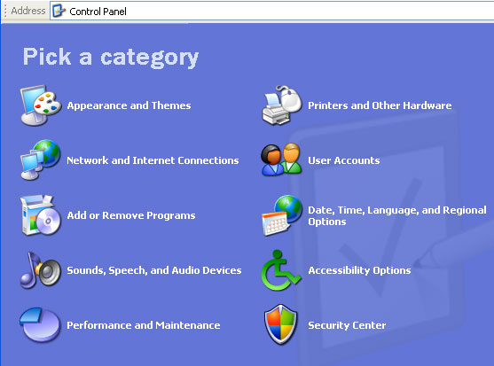
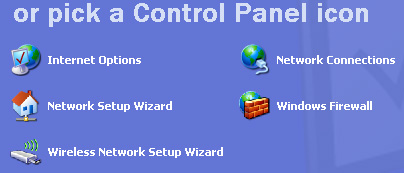
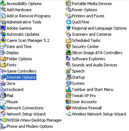
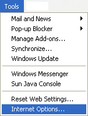
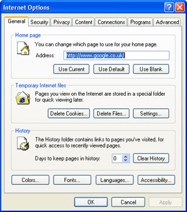

Free
computer Tutorials
|
Free
computer Tutorials
|
|
 home home |
Stay at Home and Learn | |||||||
Control Panel Icons |
||||||||
|
Internet Options Dialogue Box
To bring up the Internet Options dialogue box, do one of the following:
Through the Control Panel



Through Internet Explorer
 Whichever option you choose, you should then be looking at the following dialogue box:  Once you see this dialogue box, you'll be able to follow along with all of the Internet Options tutorials.
|